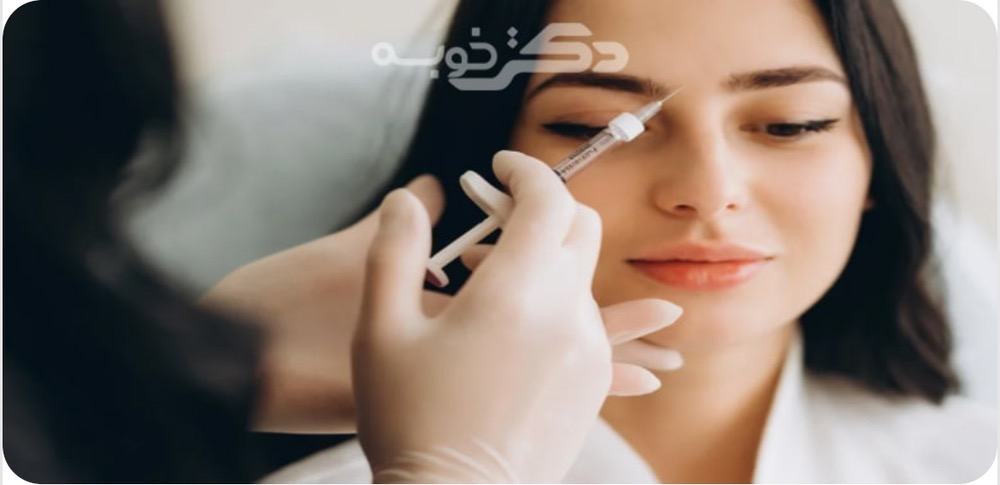
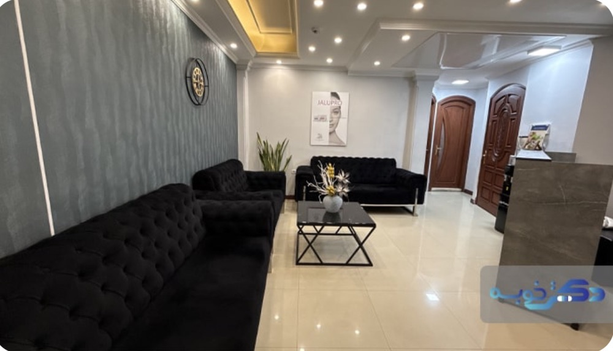
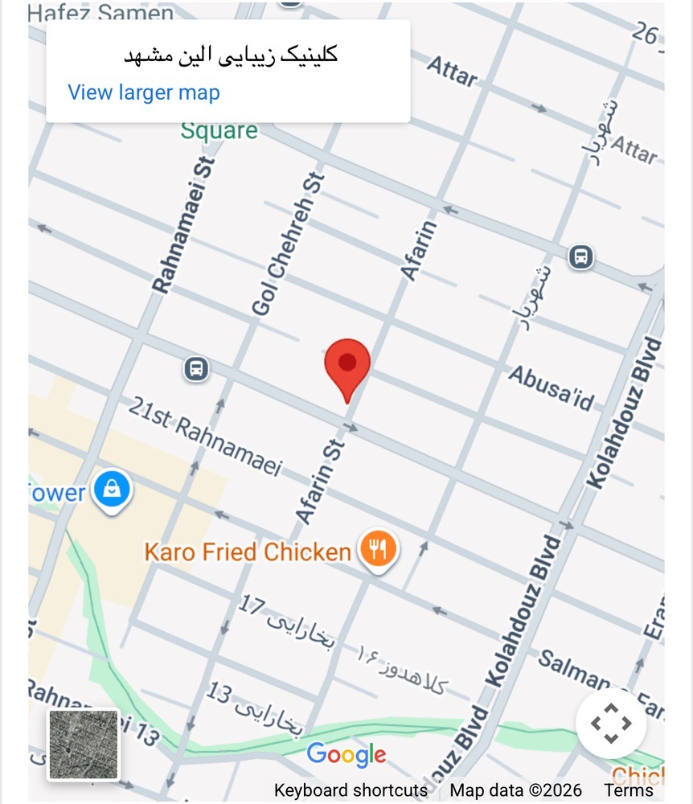
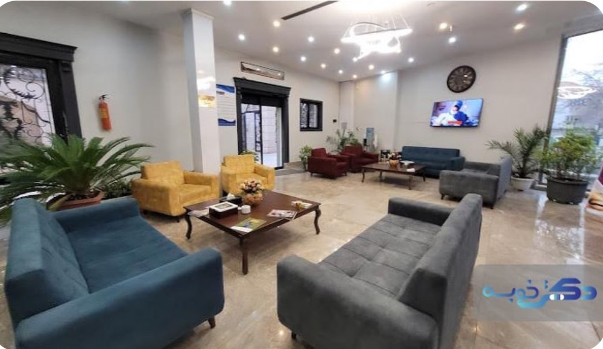
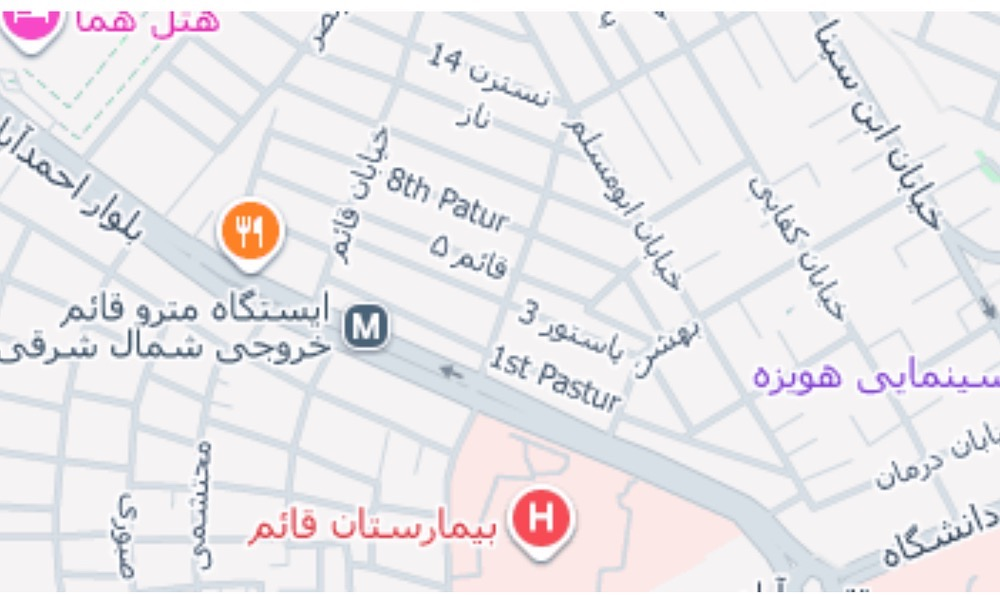
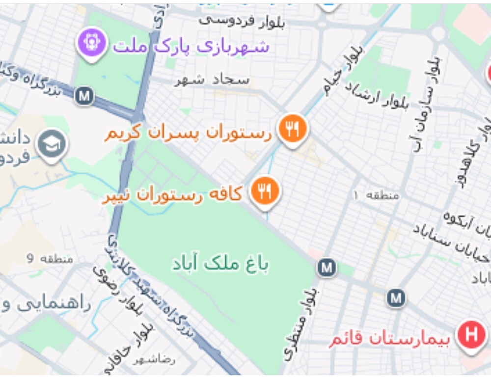
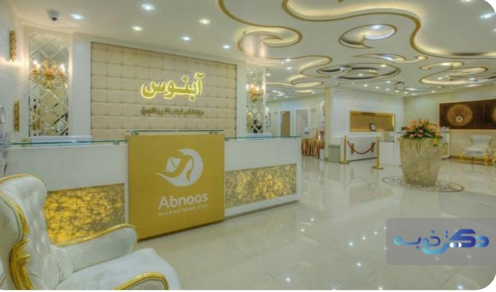
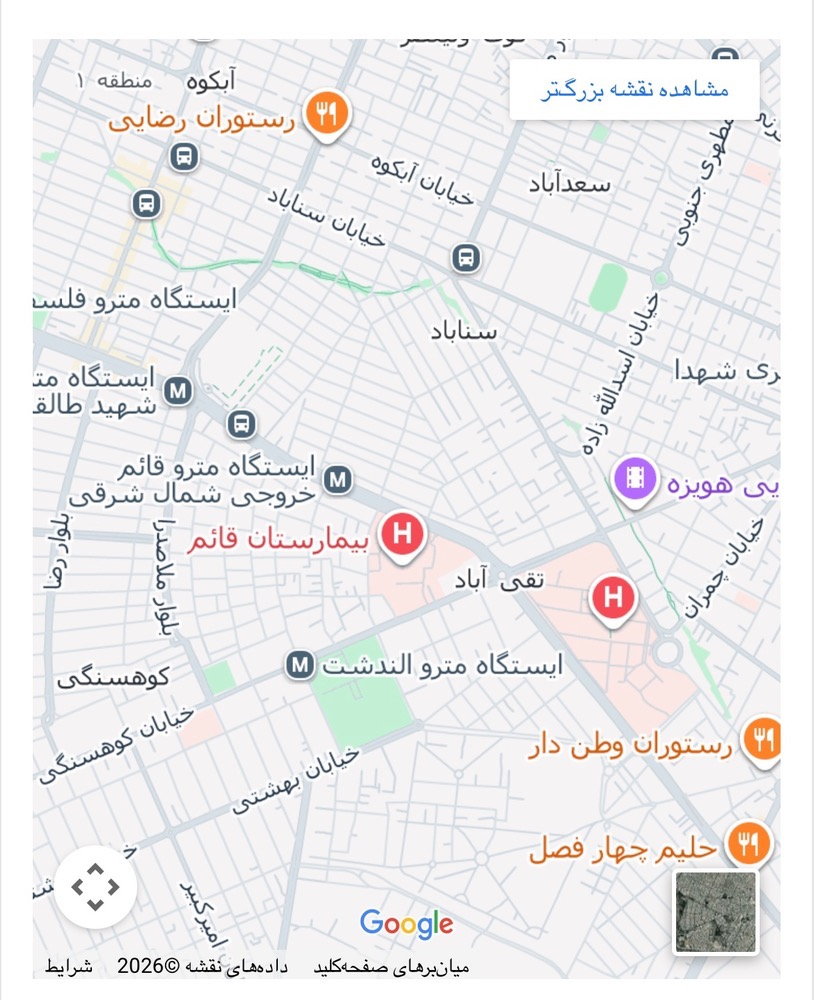
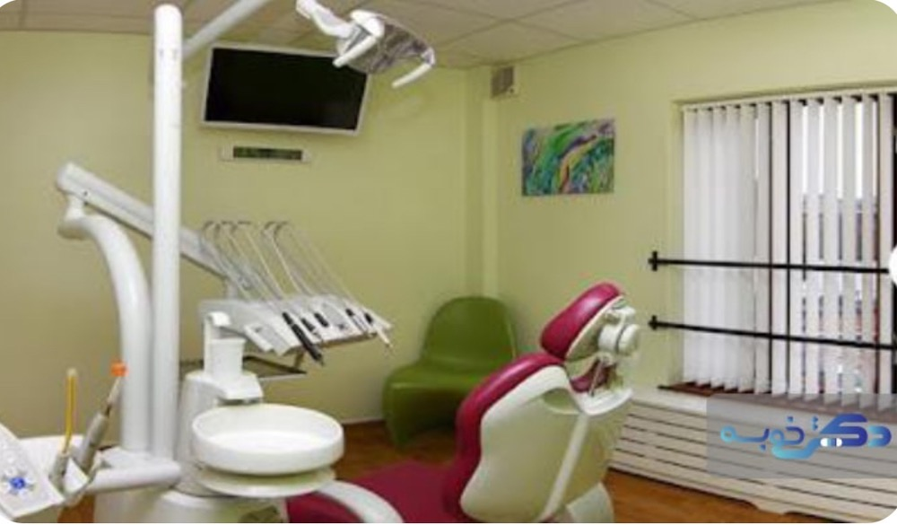

کلینیکهای زیبایی مختلفی در مشهد فعالیت میکنند و درمانهای تخصصی پوست و مو را با بالاترین کیفیت ارائه میکنند. چه به دنبال خدمات برتر در حوزه مراقبت از پوست باشید و چه به دنبال ارتقای زیبایی ظاهر باشید، بهترین کلینیکهای زیبایی مشهد، گزینههایی مناسب برای شما خواهند بود. برای انتخاب یک کلینیک زیبایی در ابتدا باید اهداف زیبایی خود را در نظر بگیرید تا بتوانید خدمات تخصصی پوست و مو را دریافت کنید که با اهداف شما مطابقت داشته باشند. موضوع دیگری که باید بررسی کنید، بازخوردها و نظرات مشتریان است. اگر کلینیک زیبایی بازخوردهای مثبت متعددی را دریافت کرده است، نشان میدهد کلینیک زیبایی خدمات باکیفیتتری را ارائه میدهد. به هر حال، برای این که راحتتر بتوانید تصمیم بگیرید، در این مقاله از دکتر خوبه تصمیم گرفتیم به معرفی 10 تا از بهترین کلینیک زیبایی در مشهد بپردازیم تا در صورت نیاز به این کلینیکها مراجعه کنید.

کلینیک زیبایی الین واقع در مشهد، یکی از مراکز حرفهای و پیشرفته در حوزه خدمات زیبایی است که با بهرهگیری از جدیدترین تکنولوژیها و تیم متخصص، رضایت بالای مراجعان را به خود اختصاص داده است. این کلینیک با ارائه خدماتی چون تزریق فیلر، بوتاکس، لیفت با نخ، تزریق چربی، بلفاروپلاستی، ساکشن غبغب و بوکال فت بهصورت کاملاً تخصصی فعالیت میکند. الین همچنین در زمینه جوانسازی پوست و مو، خدماتی مانند هایفوتراپی ۲۲ بعدی، مزوژلهای پیشرفته (جالپرو و پروفایلو)، سابسیژن، مزوتراپی، هیرفیلر، اگزوزوم، پیآرپی و کربوکسیتراپی را ارائه میدهد. خدمات لاغری موضعی با دستگاه التیمو پلاس ۲۰۲۴، پاکسازی تخصصی پوست و لیزر موهای زائد الکساندرایت از دیگر خدمات جامع این کلینیک است.

برویم برای بهترین کلینیک زیبایی در تهران که بهتر است بشناسید!

کلینیک پوست و مو مانا دکتر سلیمان نوری، گزینهای مناسب در زمینه پوست و مو است و خدمات زیبایی آنها نیز از این قاعده مستثنی نیست. این کلینیک زیبایی طیف وسیعی از درمانها از لیزر موهای زائد تا حتی فیلرهای پوستی را ارائه میدهد.


دوست دارید بدانید بهترین جراح بینی در مشهد چه اشخاصی هستند؟

تیم کلینیک تخصصی پوست و مو آبنوس برای اطمینان از ارائه خدمات با کیفیت در یک فضای ایمن و دلپذیر تلاش میکند. رضایت بیمار دغدغه اصلی این کلینیک است و هر یک از خدمات ارائه شده در کلینیک آبنوس برای پاسخگویی به نیازهای خاص مشتری طراحی شده است.

